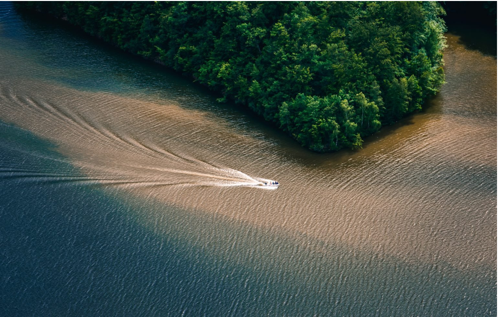
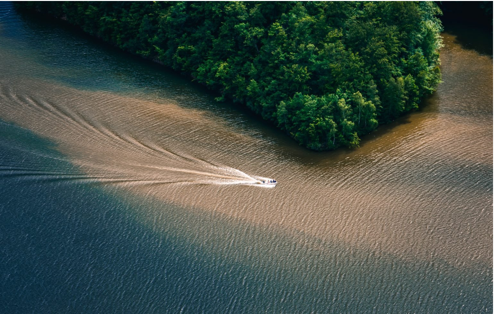
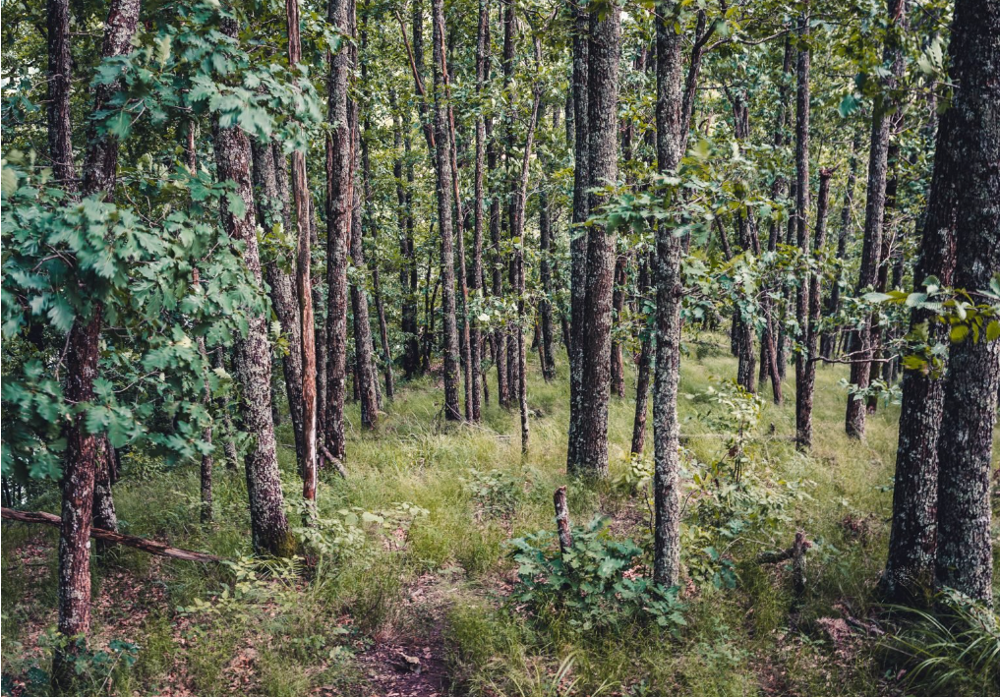
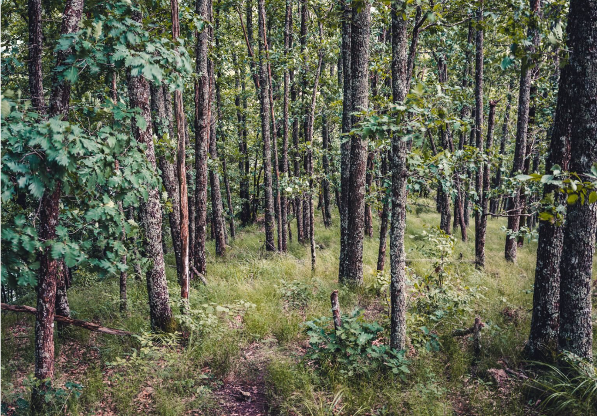

Traseul spre Piatra Lui Lucaci
 

Traseul incepe prin padure de la Saua Fundului Corbului, avand mai multe
Circuitul spre Piatra lui Lucaci începe de la Barajul Tarnița, unde se lasă
și mașinile de obicei și, urmând punctul roșu pe un drum forestier, pe lângă
case de vacanțe și pe lângă baza Salvamont. După aproximativ 20 de minute
de mers lejer, într-o curbă mai largă, poți opta pentru una dintre cele
două variante: pe langa lac sau pe drum forestier.
Având în vedere că traseul este unul circuit, puteți urma în continuare
Punctul Roșu în urcare până la o poiană splendidă, unde ajungeți după
ce ați trecut de observator de vânătoare. După acestea veți da în
dreapta-spate de un drum forestier pe care îl veți urma până ajungeți
înapoi la punctul de start.
 
